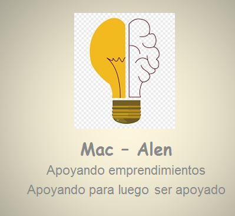

Alencastre Gonzales,Oliver steven
Estudiante de Ingeniería de sistemas
OBJETIVO:
Asumir responsabilidades al cargo el cual me
presento, en la cual aplicare los
conocimientos y habilidades adquiridas; de
esa manera lograr mi desarrollo y
crecimiento, tanto profesional como laboral;
en beneficio de mi persona y la empresa a la
cual representare.
FORMACIÓN ACADÉMICA
- Universidad César vallejo
Estudiante de Ingeniería de Sistemas VIII
(2021 - actualmente).
- Instituto Superior Tecnológico CEPEA. (2014)
Ofimática avanzado
CONTACTO
Correo :Alencastre_1993@gmail.com
link:https://www.linkedin.com/in/oliver-steven-alencastre-gonzales-aba604211/
celular: 981471647 entel // 9876174571 claro
Dni: 70605791
Ubicacion: Lima - San marin de porres
IDIOMAS / COMPUTACIÓN
IDIOMA:
INSTITUCIÓN:
- Universidad César Vallejo
NIVEL:
NOMBRE DEL PROGRAMA
INFORMÁTICO:
- Cisco Certified
Network Associate (CCNA)
(año)
2019
INSTITUCIÓN:
- Universidad César vallejo
NIVEL:
EXPERIENCIA LABORAL
Konecta BTO SL. (Junio 2018 - Marzo 2021 )
Cargo: Soporte técnico N2.
- Era el encargado de enviar reportes diarios a España
sobre el avance de solucionar realizadas por N2
konecta Perú.
- Capacite desde el 2020 al 2021 a N1 y N2 de konecta
Perú.
- Encargado de realizar feedback a N2.
ACTUALIZACIÓN PROFESIONAL
- SEMINARIO:"La Inteligencia Artificial y las Redes
Neuronales Artificiales" Universidad Nacional de Ingeniería -
2020
- CONFERENCIA:"II Congreso internacional de gestion
empresarial e investigacion" - Universidad Cèsar Vallejo 2019
- TALLER:"Oratoria y liderazgo" "Centro de Investigacion de
Psicologia Aplicada Latinoamericana 2018
EXPERIENCIAS COMPLEMENTARIAS
- Mayor puntaje en evaluación de desempeño.
- Trabajador con mayor puntualidad.
- Capacitador del grupo G 62 - 2021 en soporte
tecnico N2.
LOGO - MAC ALEN
